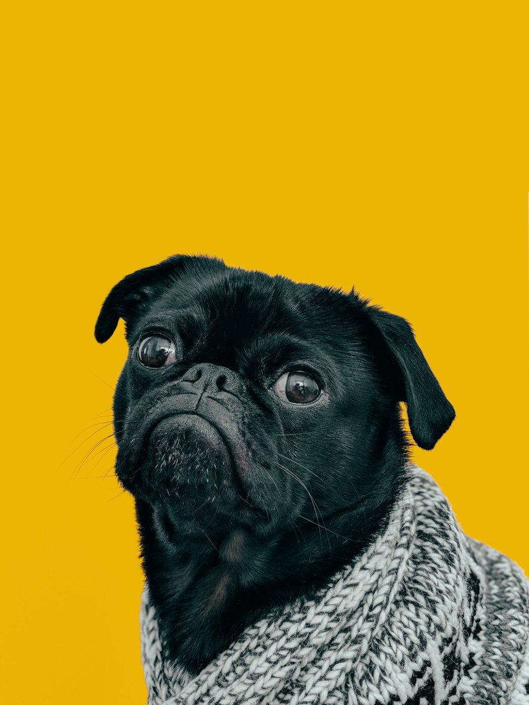

Resgate urbano
Atendemos bichos em situação de risco em ruas, becos e áreas vulneráveis, levando atenção médica e cuidado imediato.
Somos uma organização de proteção animal que atua no resgate, acolhimento e adoção responsável. Acreditamos que cada animal merece dignidade, saúde e um lar seguro, e que isso só é possível quando a comunidade se mobiliza.

Atendemos bichos em situação de risco em ruas, becos e áreas vulneráveis, levando atenção médica e cuidado imediato.
Garantimos lares temporários, alimentação, higiene e acompanhamento de veterinários e voluntários.
Criamos pontes entre comunidade, tutores, veterinários e adotantes para construir uma rede de cuidado.
Recebemos alertas da comunidade e avaliamos a urgência do caso.
Animais são levados para avaliação, tratamento e acolhimento seguro.
Conectamos cada pet a uma família preparada, com orientação e acompanhamento.